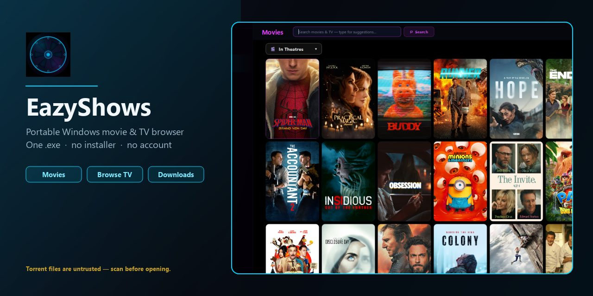

EazyShows
Portable Windows movie & TV browser. One .exe, no installer.

Torrent files are untrusted — scan before opening.
Portable Windows movie & TV browser. One .exe, no installer.

Torrent files are untrusted — scan before opening.